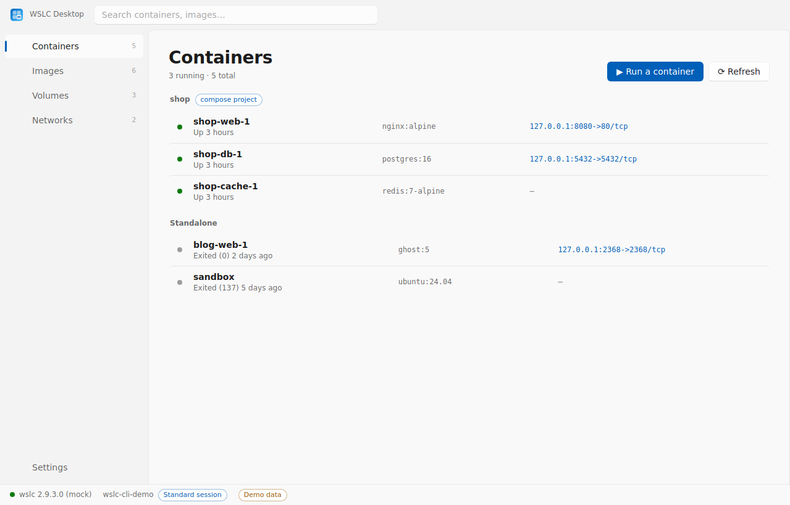
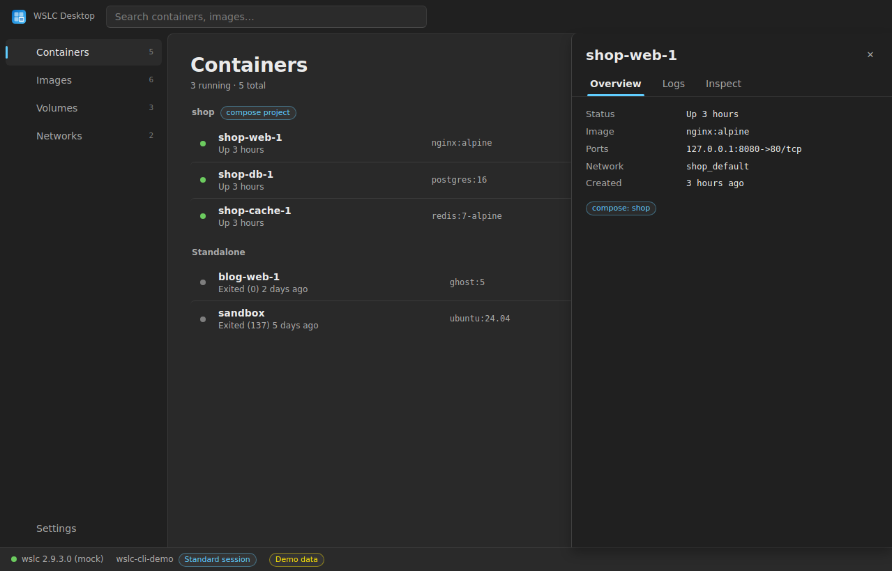
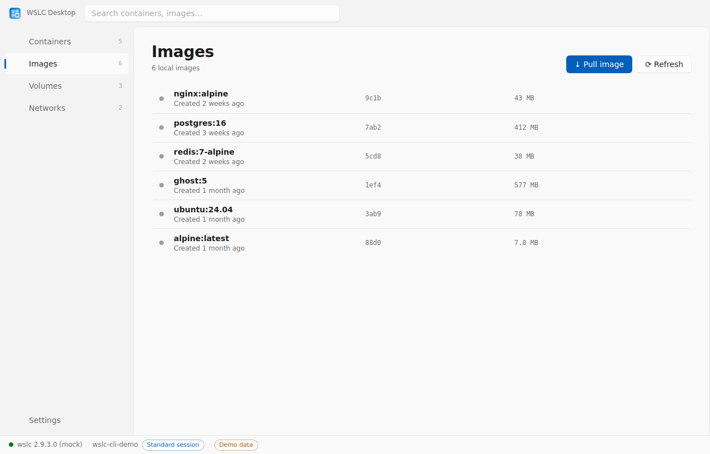

Microsoft's new wslc runs containers natively on Windows — from a terminal. WSLC Desktop gives it the desktop it deserves: containers, images, volumes, networks and live logs in a simple, fluid Windows 11 app. No daemon, no telemetry.

…without the weight. The app is a thin shell over wslc.exe: nothing runs when it's closed.
Start, stop, restart, remove. Status, image and published ports on every row — one click opens a port in your browser or a shell in Windows Terminal.
Streaming logs with auto-follow, and the container's full configuration one tab away.
Pull from any registry, run an image with a quick dialog (ports, volumes, environment), create and clean up volumes and networks.
wslc keeps a separate world per user and elevation level. The bar always shows which session you're in, flags Administrator sessions, and turns preview errors into plain guidance.
Containers managed by wslc-compose are grouped under their project, like Docker Desktop groups compose stacks.
No account, no telemetry, no background service. Open source under MIT.
Fluent design tokens, Mica window material, Segoe UI Variable for text and Cascadia Mono for the technical bits. Light and dark follow Windows.


wslc list must work in a terminal.